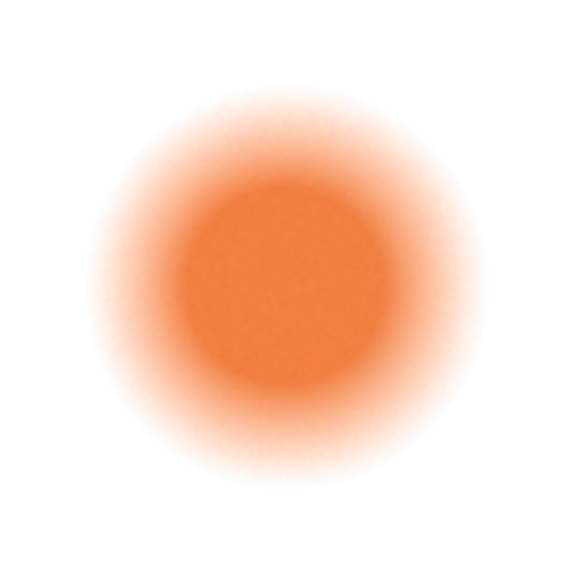

"Hoarfrost" is the term for the beautiful ice crystals that form on clear, frigid winter nights—a scenario the Hoary Redpoll is intimately familiar with. This tiny finch breeds in arctic tundra and survives brutal winters well north of where most people live. "Hoary" also references this bird's frosty plumage, and "redpoll" is a nod to its berry-red crown patch. In some years, Hoary Redpolls make rare appearances to southern Canada or the northern U.S., sometimes showing up at bird feeders along with Common Redpolls.
Hoary Redpolls feed on seeds, buds, and catkins of Arctic plants, including trees, shrubs, weeds, and grasses. They also eat insects and spiders during the warmer months. They are energetic little birds, clinging to slender branches and stems, often suspended upside down as they strip seeds or probe for insects. They also forage on the ground, hopping around to pick up windblown seeds. When foraging, they usually tolerate others of their species, but on occasion they threaten each other with open bills, or even clash physically to defend a food source. Foods include seeds of birch, alder, willow, cottongrass, knotweed, pigweed, wood-rush, stink grass, and various sedges (genus Carex). Especially when feeding young, they eat larval and adult flies, moths, and butterflies.
Hoary Redpolls nest in areas of tundra that have scattered shrubs or stunted trees such as willow, birch, or alder. They use both dry areas and wetter tundra, sometimes nesting along creeks or rivers. Compared with Common Redpolls, Hoary Redpolls often select more barren or higher-elevation habitats for nesting. After the breeding season, Hoary Redpolls gather in flocks and wander in search of food, usually north of (or above) treeline, occasionally showing up in populated areas with seed-rich fallow fields. Some Hoary Redpolls overwinter in windswept areas near their nesting grounds, enduring brutally cold temperatures, months of darkness, and very high winds. On an approximately 2-year cycle, Common Redpolls irrupt southward to more populated areas, and Hoary Redpolls sometimes take part in these movements as well.
Typically nests in shrubs or stunted trees (2–3 feet above ground), sometimes near water. Also nests in rocky crevices, cavities in driftwood, or directly on the ground.
The female builds the nest, a rather large cup of stems, down, or twigs of willow, alder, and cottongrass and other grasses, along with rootlets, fur, and feathers. Nests average about 4 inches across and 3 inches tall, with interior cup 1.9 inches across and 1.5 inches deep.